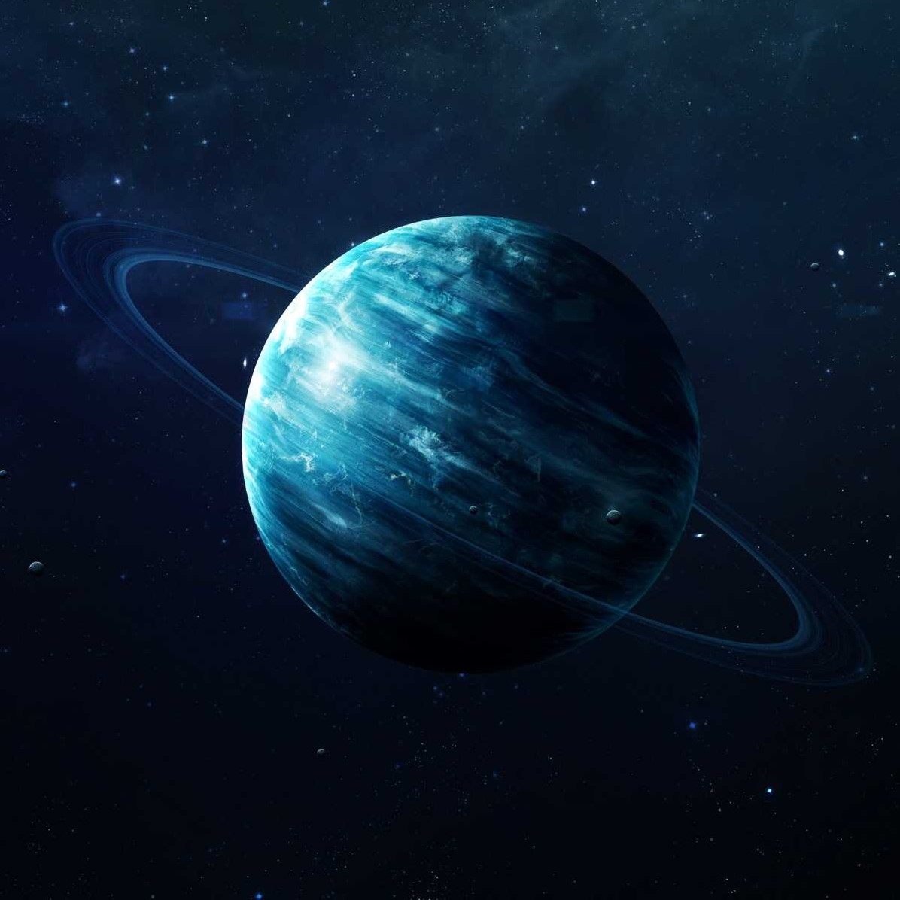
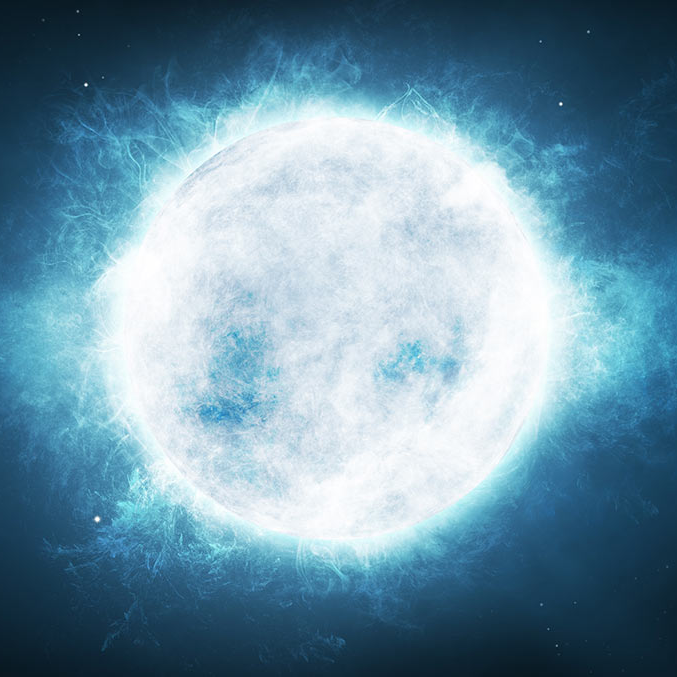
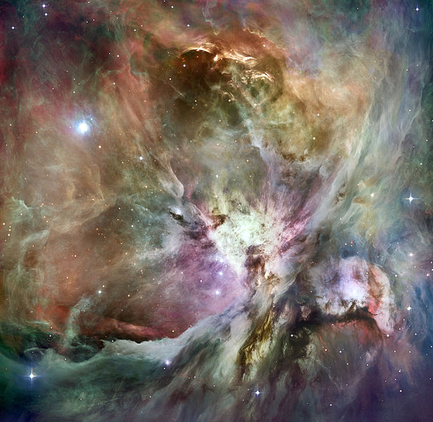

Planetas
Um planeta é um corpo celeste que orbita uma estrela ou um remanescente de estrela, com massa suficiente para se tornar esférico pela sua própria gravidade, mas não ao ponto de causar fusão termonuclear, e que tenha limpo de planetesimais a sua região vizinha.
 Galáxias
Galáxias
Uma galáxia é um grande sistema, gravitacionalmente ligado, que consiste de estrelas, remanescentes de estrelas,um meio interestelar de gás e poeira, e um importante mas insuficientemente conhecido componente apelidado de matéria escura.

Estrelas
Uma estrela é uma grande e luminosa esfera de plasma, mantida íntegra pela gravidade e pela pressão de radiação. Ao fim de sua vida, uma estrela pode conter também uma proporção de matéria degenerada

Nebulosas
Nebulosas são nuvens formadas por poeira cósmica, hidrogênio e gases ionizados a partir de restos de estrelas que se desagregaram. Ao serem observadas, as nebulosas apresentam formatos irregulares semelhantes aos das nuvens, o que foi determinante para a escolha do nome desses corpos celestes, pois a palavra nebulosa provém de um termo em latim que significa nuvem.